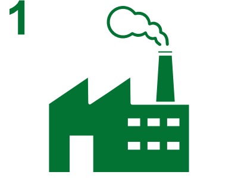
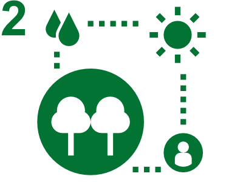
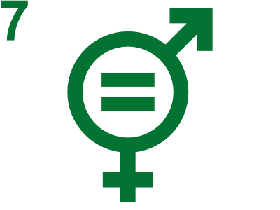
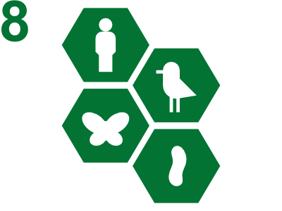
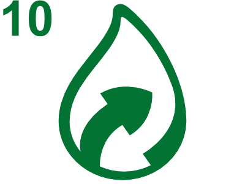

Decálogo del Constituyente Verde
Se inicia un proceso constituyente que convocará a las y los chilenos para dotarse de un nuevo pacto político y social, que permita construir una sociedad más justa, inclusiva y sustentable. Este proceso, inédito en nuestra historia, nace en una crisis climática, ambiental, sanitaria y social. Tenemos la oportunidad de hacer una Constitución que favorezca una transición ecológica necesaria para alcanzar un desarrollo sustentable y pleno de sus ciudadanos.
Sin duda uno de los principales problemas que afronta nuestro país, a la par que la crisis social y política, es la crisis socioambiental, que golpea principalmente a quienes se encuentra en una mayor situación de vulnerabilidad y a las zonas de sacrificio, lugares donde la opción por una nueva constitución triunfó ampliamente, dando cuenta de la esperanza de un futuro mejor y más justo para todos y todas. El compromiso ambiental de los chilenos se ha manifestado persistentemente, cuando muchas comunidades se han planteado firme frente a proyectos contaminantes que han ido contra el desarrollo sustentable y cuando han alzado sus voces en favor de su protección.
Por ello queremos impulsar que los y las futuros constituyentes, reconociendo la actual crisis climática y ambiental, se comprometan a que la nueva Constitución incorpore como eje estructurante un pacto político de todos los y las actores en favor de la protección del medio ambiente y de la armonía entre la sociedad y la naturaleza . Quienes declaren su apoyo al decálogo pueden decir que han considerado los aspectos que el proceso Recicla la Política ha propuesto como claves para una constitución verde.
Para ello presentamos el siguiente decálogo del y de la constituyente verde, que representa un conjunto de los temas mínimos a abordar de modo de efectivamente contar con una Constitución Ecológica para Chile:
1. Derecho a la justicia ambiental.

Defender en la convención constitucional principios que recojan las demandas sociales y ambientales:
- De distribución justa de las cargas y beneficios ambientales y de democracia ambiental.
- De protección ambiental, de progresividad y no regresión de estándares ambientales.
- De precaución, de responsabilidad, de resiliencia climática y contaminador pagador.
2. Principio de equidad intra e intergeneracional.

Principio de justicia o solidaridad intra e intergeneracional, para el uso racional y la distribución equitativa y mantención de los ecosistemas y bienes comunes, recogiendo el igual derecho de todos los habitantes y de las generaciones futuras a disfrutar de la naturaleza, del planeta, y de las oportunidades de desarrollo que brinda.
Un modelo de desarrollo sostenible, que incluya una economía distributiva y regenerativa, con un sistema económico basado en una producción y consumos responsables, enmarcada en los límites de la biosfera y su capacidad de sostener nuestro desarrollo como sociedad, centrado en la creación y distribución de bienestar y la prosperidad para todos.
Una constitución que nos permita superar el extractivismo imperante que causa que cada dólar de ingreso que genere el país se extraiga 5 veces más materiales que la media de la OCDE. Una constitución que nos permita transicionar hacia un modelo renovable, que permita bienestar permanente, y que no se agote como las materias primas no renovables que han marcado el crecimiento de nuestros primeros 200 años como país.
3. Derecho a vivir en un ambiente sano y ecológicamente equilibrado.
Promover en la convención constitucional este Derecho Fundamental que incluye el aire limpio, amparado por mecanismos efectivos y oportunos de amplio acceso, tales como un recurso constitucional, y medidas de protección y que proteja a los defensores de derechos humanos en asuntos ambientales. El estado a través de todas sus instituciones debe velar por el ejercicio de este derecho fundamental, de manera coordinada.
4. Democracia Ambiental.

Garantizar los derechos procedimentales de acceso a la información, a la participación pública y a la justicia en asuntos ambientales, con un enfoque prioritario en las personas y grupos en situación de vulnerabilidad y la protección de los defensores de derechos humanos en asuntos ambientales, en línea con los estándares del Acuerdo de Escazú, fortaleciendo la toma de decisiones de todas las partes.
5. Establecer un estado plurinacional.
Incorporar el reconocimiento constitucional de los pueblos originarios y el debido respeto su patrimonio cultural, histórico y su cosmovisión relacionada con la tierra y el territorio. Promover el derecho de adoptar formas tradicionales de estilo de vida, de acuerdo con el Convenio 169 de la OIT.
6. Luchar contra el cambio climático.
Incorporar una Acción climática ambiciosa y coordinada como un deber del Estado. Incorporación del Cambio Climático y la necesidad de un clima más seguro considerando las implicaciones éticas, políticas, sociales y económicas, promoviendo la incorporación de deberes de adaptación, mitigación, y transición justa frente al cambio climático, de brindar a los y las ciudadanos los esfuerzos de abogar por un clima más seguro, bajo los resguardos que permitan perpetuar nuestros logros como país, la prevención de desastres y adaptación al cambio climático.
7. Una sociedad diversa e inclusiva.

Promover la discusión de un modelo de sociedad sostenible e inclusiva, con enfoque de género, que permita edificar una “sociedad de cuidados”, una universalización del cuidado para que sea compartido de manera igualitaria entre mujeres y hombres, y un pacto social que supere una sociedad patriarcal y se haga cargo para las desigualdades de género, y que permita una discusión abierta y democrática de los derechos sexuales y reproductivos de la mujer.
Un estado que reconozca la diversidad de orientación sexual, y que brinde a sus ciudadanos los mismos derechos de contraer matrimonio, y tener una vida familiar plena. Una sociedad que reconozca que la familia del siglo 21, en todas sus formas, se define por las afecciones entre los miembros, y no por estructuras definidas por religiones en particular.
8. El deber del estado y de todas las personas de proteger la biodiversidad.

Debatir la opción de situar a la naturaleza, bosques, ríos. ecosistemas y seres sintientes como sujetos de derechos o de particular protección. En concordancia, promover el establecimiento de principios constitucionales que mandaten el uso racional y sostenible de los recursos o elementos naturales que tiene el país, con atención a la capacidad de regeneración de los ecosistemas y en beneficio de las grandes mayorías y para la creación de bienestar en todas sus formas, desde la conservación hasta su conversión en bienes y servicios.
Todas las personas, naturales y jurídicas, tienen el deber de proteger la naturaleza y cuidar el legado natural para las generaciones futuras. Ello incluye considerar una función ecológica del derecho de propiedad.
9. Descentralización política y tributaria.
Incorporar en la discusión constitucional el derecho a la ciudad y a un desarrollo urbano sostenible, como espacio para el progreso de las vidas de las personas, libre de contaminación, dotado de un transporte público justo y limpio, con vías adecuadas y seguras para los peatones y ciclistas, y donde se reconoce la gestión comunitaria de los espacios y bienes comunes de todos sus actores, privilegiando formas sostenibles de transporte como sus peatones y ciclistas.
Un derecho a la ciudad, que contemple una descentralización efectiva en lo administrativo y presupuestario y la valoración del conocimiento local. Que permita que gobiernos y consejos locales puedan tomar decisiones sobre lo que ocurre, independientes de las tutelas de representantes regionales de los gobiernos centrales. Que permita a los gobiernos locales hacer uso y beneficio de tributos ambientales que se recaudan en sus territorios, y que se permitan utilizar para la recuperación ambiental de las zonas impactadas por las actividades contaminantes.
10. Derecho de acceso al agua para consumo humano y para sustentar ecosistemas.

Derecho humano al acceso y saneamiento considerando al Agua como un bien común constitucional. Priorizar constitucionalmente el consumo humano y el rol como soporte de los ecosistemas, reconociendo la multiplicidad de formas colectivas de gestión y propiedad. Una constitución que proteja los glaciares y su rol en el ciclo hídrico.
Quienes adhieran a este decálogo, apoyan un pacto constituyente verde. La ciudadanía podrá entonces votar por quienes se comprometen a esta nueva constitución verde, la que necesitamos urgente para hacer frente a las crisis sociales y ambientales del siglo 21.